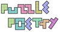

{% if page.path contains '_posts' %}

{% elsif page.path contains '_puzzlepoems' %}

{% else %}

{% endif %}
© {{ site.time | date: '%Y' }} —
Powered by Jekyll and hacky U.Va. English types,
{% if site.github.is_project_page %}
With Support from U.Va.'s IHGC and the Page-Barbour & James W. Richard Lecture Committee.
Theme based on Bryan Culver's Minimal.
Make contact with us.
{% endif %}